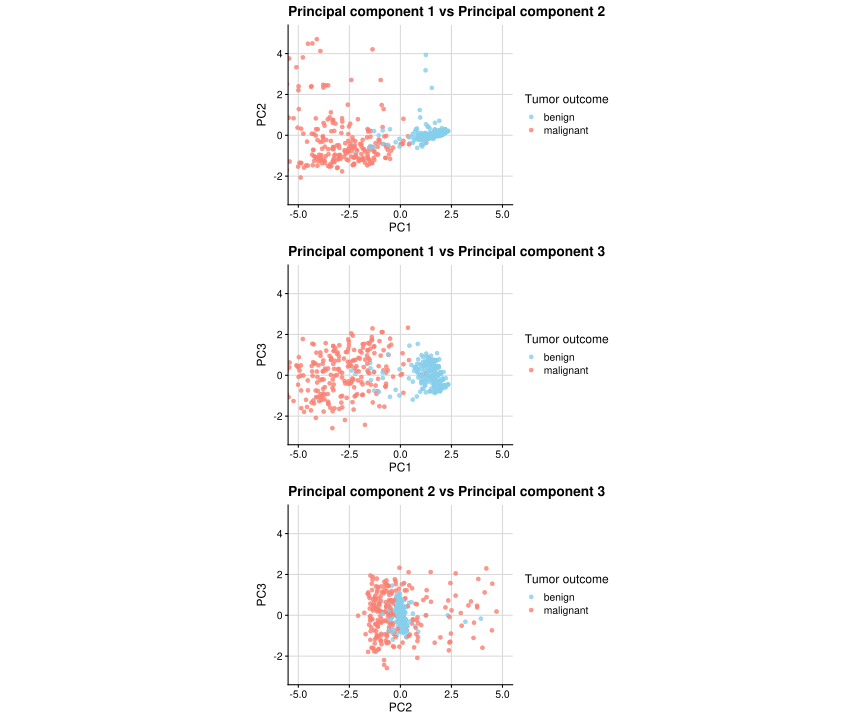
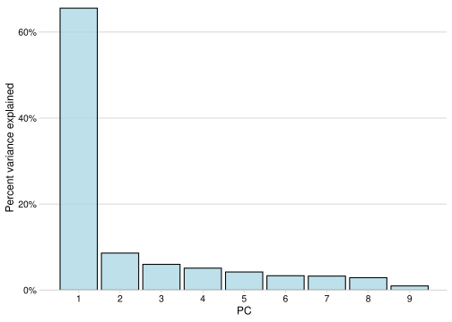
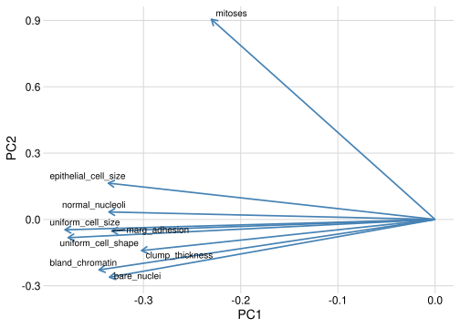

library("tidyverse")
library("broom")
library("cowplot")
library("ggrepel")
library("table1")lab07_assignment
Load Libraries
Load data
We will in this mini-report a biopsy dataset from the university of Wisconsin Hospitals. A set of 699 patients and a sample from nine variables with a scoring of 1-10 seen in the figure below, along with the outcome of the tumor.
biopsy <- read_csv("https://wilkelab.org/classes/SDS348/data_sets/biopsy.csv")Data Wrangle
pca_fit <- biopsy |>
select(where(is.numeric)) |>
prcomp(scale = TRUE)pca_fit_score <- pca_fit |>
augment(biopsy) |>
rename_with(~str_remove(.x, ".fitted"), starts_with(".fitted"))Data Description
This breast cancer database was obtained from the University of Wisconsin Hospitals, It consists of assessed biopsies of breast tumours for 699 patients; each of nine attributes has been scored on a scale of 1 to 10, and the outcome is also known. It has 10 columns and 683 rows.
biopsy |> head(5)# A tibble: 5 × 10
clump_thickness uniform_cell_size uniform_cell_shape marg_adhesion
<dbl> <dbl> <dbl> <dbl>
1 5 1 1 1
2 5 4 4 5
3 3 1 1 1
4 6 8 8 1
5 4 1 1 3
# ℹ 6 more variables: epithelial_cell_size <dbl>, bare_nuclei <dbl>,
# bland_chromatin <dbl>, normal_nucleoli <dbl>, mitoses <dbl>, outcome <chr>We can present the attributes in a table to get an idea of the differences between factors in a benign and malignant breast tumor.
biopsy |>
mutate(outcome = factor(outcome)) |>
table1(x = formula(~clump_thickness + uniform_cell_size +
uniform_cell_shape + marg_adhesion +
epithelial_cell_size + bare_nuclei +
bland_chromatin + normal_nucleoli +
mitoses | outcome), data = _)| benign (N=444) |
malignant (N=239) |
Overall (N=683) |
|
|---|---|---|---|
| clump_thickness | |||
| Mean (SD) | 2.96 (1.67) | 7.19 (2.44) | 4.44 (2.82) |
| Median [Min, Max] | 3.00 [1.00, 8.00] | 8.00 [1.00, 10.0] | 4.00 [1.00, 10.0] |
| uniform_cell_size | |||
| Mean (SD) | 1.31 (0.856) | 6.58 (2.72) | 3.15 (3.07) |
| Median [Min, Max] | 1.00 [1.00, 9.00] | 6.00 [1.00, 10.0] | 1.00 [1.00, 10.0] |
| uniform_cell_shape | |||
| Mean (SD) | 1.41 (0.957) | 6.56 (2.57) | 3.22 (2.99) |
| Median [Min, Max] | 1.00 [1.00, 8.00] | 6.00 [1.00, 10.0] | 1.00 [1.00, 10.0] |
| marg_adhesion | |||
| Mean (SD) | 1.35 (0.917) | 5.59 (3.20) | 2.83 (2.86) |
| Median [Min, Max] | 1.00 [1.00, 10.0] | 5.00 [1.00, 10.0] | 1.00 [1.00, 10.0] |
| epithelial_cell_size | |||
| Mean (SD) | 2.11 (0.877) | 5.33 (2.44) | 3.23 (2.22) |
| Median [Min, Max] | 2.00 [1.00, 10.0] | 5.00 [1.00, 10.0] | 2.00 [1.00, 10.0] |
| bare_nuclei | |||
| Mean (SD) | 1.35 (1.18) | 7.63 (3.12) | 3.54 (3.64) |
| Median [Min, Max] | 1.00 [1.00, 10.0] | 10.0 [1.00, 10.0] | 1.00 [1.00, 10.0] |
| bland_chromatin | |||
| Mean (SD) | 2.08 (1.06) | 5.97 (2.28) | 3.45 (2.45) |
| Median [Min, Max] | 2.00 [1.00, 7.00] | 7.00 [1.00, 10.0] | 3.00 [1.00, 10.0] |
| normal_nucleoli | |||
| Mean (SD) | 1.26 (0.955) | 5.86 (3.35) | 2.87 (3.05) |
| Median [Min, Max] | 1.00 [1.00, 8.00] | 6.00 [1.00, 10.0] | 1.00 [1.00, 10.0] |
| mitoses | |||
| Mean (SD) | 1.07 (0.510) | 2.60 (2.56) | 1.60 (1.73) |
| Median [Min, Max] | 1.00 [1.00, 8.00] | 1.00 [1.00, 10.0] | 1.00 [1.00, 10.0] |
Analysis
PC coordinates
As we have 9 principal components we will first setup a function for comparative plotting of the PCA space.
plot_pc <- function(pc_x, pc_y) {
ggplot(pca_fit_score, aes_string(x = pc_x, y = pc_y, color = "outcome")) +
geom_point(size = 1.5, alpha = 0.8) +
scale_color_manual(
values = c(malignant = "salmon", benign = "skyblue")
) +
theme_half_open(12) + background_grid() +
labs(title = paste("Principal component",
str_remove(pc_x, "PC"),
"vs",
"Principal component",
str_remove(pc_y, "PC")),
x = paste(pc_x),
y = paste(pc_y),
color = "Tumor outcome")
}Now we can compare the first three principal components to each other.
PC1vPC2 <- plot_pc("PC1", "PC2") + coord_fixed(xlim = c(-5,5), ylim = c(-3,5))Warning: `aes_string()` was deprecated in ggplot2 3.0.0.
ℹ Please use tidy evaluation idioms with `aes()`.
ℹ See also `vignette("ggplot2-in-packages")` for more information.PC1vPC3 <- plot_pc("PC1", "PC3") + coord_fixed(xlim = c(-5,5), ylim = c(-3,5))
PC2vPC3 <- plot_pc("PC2", "PC3") + coord_fixed(xlim = c(-5,5), ylim = c(-3,5))
plot_list <- list(PC1vPC2, PC1vPC3, PC2vPC3)
plot_grid(plotlist = plot_list, nrow = 3)
Already here based on the coordinates we can see that principal component 1 has significant influence on the tumour outcome, as would be expected of the principal component with the higest variance which we will compare later.
Variance explained by each PC
Here, we’ll plot the variance explained by each PC.
pca_fit |>
tidy(matrix = "eigenvalues") |>
ggplot(aes(PC, percent)) +
geom_col(fill = "lightblue",
alpha = 0.8,
color = "black") +
scale_x_continuous(breaks = 1:9) +
scale_y_continuous(
labels = scales::percent_format(),
expand = expansion(mult = c(0, 0.01))
) +
theme_minimal_hgrid(12) +
labs(y = "Percent variance explained")
The first component captures 65% of the variation in the data and, as we can see from the first plot in this post, nicely separates the benign samples from the malignant samples.
Loading Analysis
Now let’s look at which of the nine biopsy measurements actually drive the principal components. The loadings show us how much each variable contributes to each PC, helping us understand what the components actually represent.
pca_fit |>
tidy(matrix = "rotation") |>
pivot_wider(names_from = "PC",
names_prefix = "PC",
values_from = "value") |>
ggplot(aes(PC1, PC2)) +
geom_segment(aes(xend = 0, yend = 0),
arrow = arrow(ends = "first", length = grid::unit(8, "pt")),
color = "steelblue", linewidth = 0.8) +
geom_text_repel(aes(label = column),
size = 3.5,
max.overlaps = 20,
hjust = 1,
vjust = 1) +
theme_minimal_grid() +
labs(x = "PC1",
y = "PC2")
All nine attributes contribute to PC1, meaning malignant tumors tend to score high across all features together which matches what we saw earlier in the table. This is why PC1 effectively separates benign from malignant tumors. We can also clearly see that PC2 is mainly driven by mitoses, capturing additional variation in cell division rates.